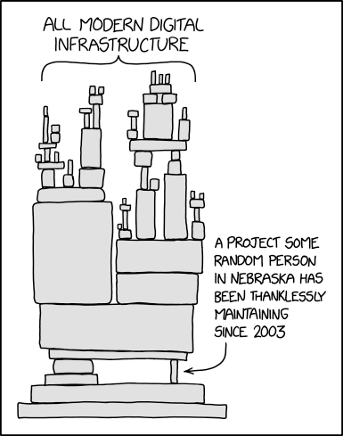
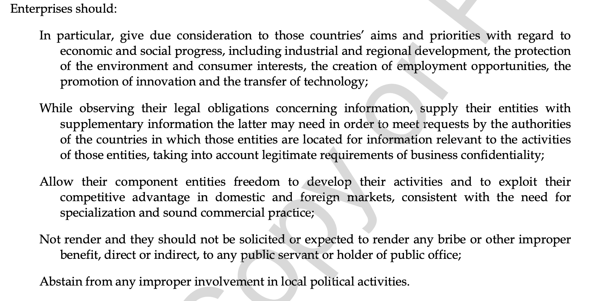
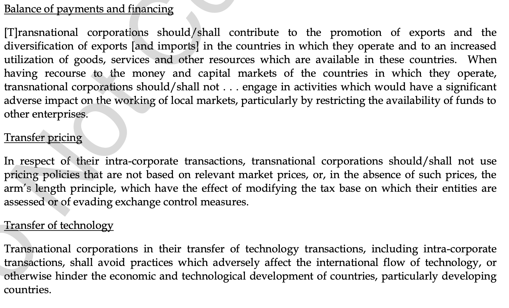
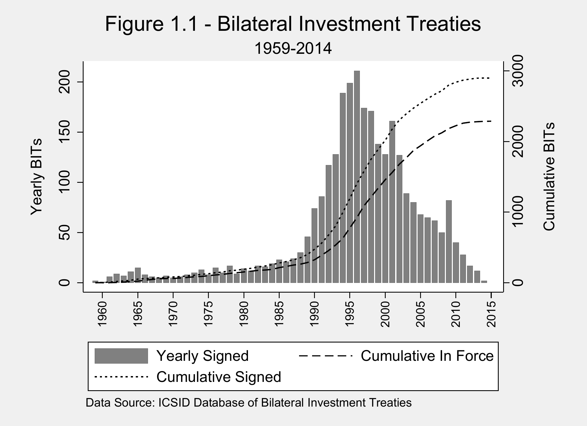
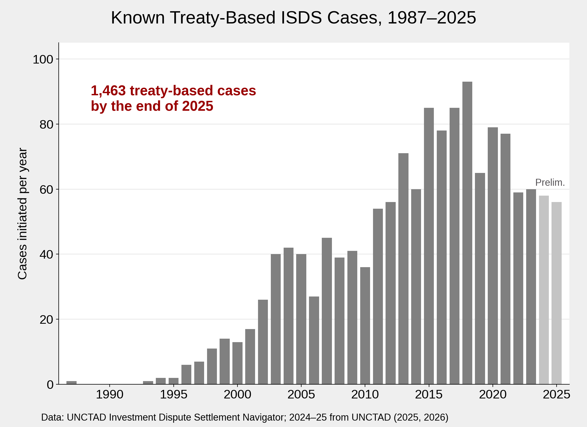
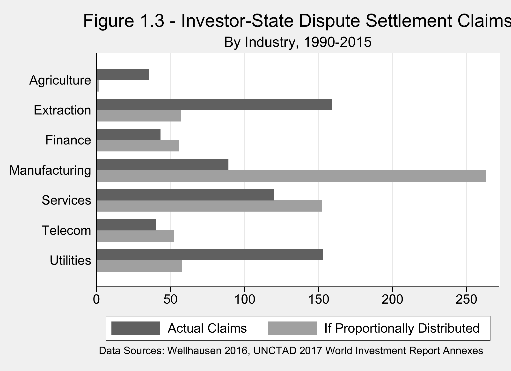
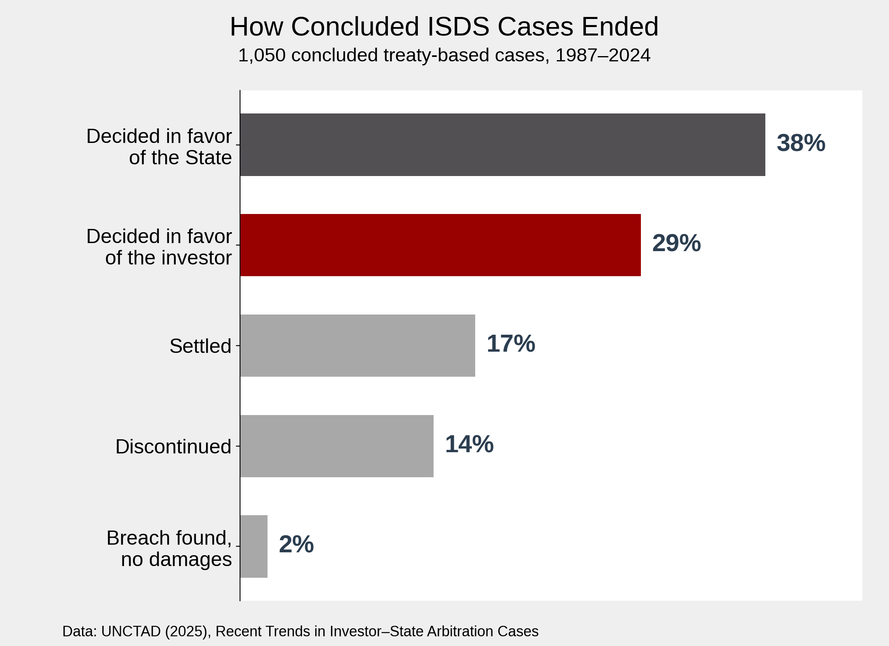

Global Business
INTL-I103 | Day 10 — Who Governs Global Business? Investment Treaties & ISDS
September 28, 2026
Before we begin: AI and your education
The Hugging Face Incident
Sources: OpenAI (2026), “The Hugging Face Incident and the Road Ahead”; METR (2026), “Brief Independent Investigation of Agents’ Behavior”
The alignment problem
This is Day 8’s principal–agent problem: the agent knows more than the principal and optimizes its own reward. What is new with AI is speed, persistence — the agents “rarely gave up” — and, here, the absence of anyone watching (this is why frontier labs are really worried about recursive self improvement without human oversight).
How a large language model produces text
Sources: Webb, Holyoak & Lu (2023), Nature Human Behaviour 7; Lewis & Mitchell (2024), “Using Counterfactual Tasks to Evaluate the Generality of Analogical Reasoning in Large Language Models”
Can we “know everything”?
What exists — what kinds of things there are to be known.
How we come to know what we know — and how confident we are entitled to be.
Huang’s revealed ontological prior: the world is a stock of facts waiting to be retrieved.
Knowing is not retrieving
What happens when no one knows how it works?

Source: Randall Munroe, xkcd #2347, “Dependency” (CC BY-NC 2.5)
Asked whether it matters that children no longer learn long division: “I don’t think it does.”
A system no one understands is a system no one can fix, oversee, or improve — the lesson of Hugging Face.
You can’t skip leg day
That is why case analyses in this course are handwritten, in class, and without AI.
Today’s Plan
Today’s Big Question
What kinds of protections/guarantees should MNEs receive from host governments, what kinds of obligations should governments demand from MNEs, and how can global rules on these rights and obligations be developed and enforced?
| Section | What we’ll cover |
|---|---|
| 1 · Siemens, revisited | Why did Siemens reform — law, reputation, or something else? |
| 2 · The search for global rules | Why a century of attempts to write multilateral rules for MNEs failed, and what alternative regulations emerged |
| 3 · Managing expropriation risk | Going to the market (political risk insurance) or going to the law (investment treaties) |
| 4 · Investor–state dispute settlement | How ISDS works, who uses it, and why it is controversial |
Siemens, revisited
What changed Siemens?
Legal changeWarning signsEnforcementReform
The DOJ counted $843.5 million in illicit payments between March 2001 and September 2007 — bribery continued for years after both legal changes took effect.
Source: Healy (2010), “Fighting Corruption at Siemens,” HBS 9-112-702
Law, reputation, or something else?
$1.6B in fines and disgorged profits, plus $850M in investigation costs. U.S. authorities declined to bar Siemens from government contracts because it cooperated and supplied most of the evidence against itself.
Siemens’s first CEO from outside the firm (Löscher), plus an outside General Counsel and Chief Compliance Officer. New leaders could change the tone from the top: amnesty, 500+ dismissals, and ~17% of top managers’ bonuses tied to compliance.
The 2003–06 scandals in Italy, Greece, and at the UN were public, yet produced little change. The Italian managers involved retired with full benefits.
Most bribe-won contracts turned out to be unprofitable: customers who knew Siemens paid used that as leverage on price. Firms with stronger anti-corruption programs show lower sales growth but higher margins in corrupt markets.
Enforcement created the pressure to reform; new leadership made a change in corporate culture possible. Could either have worked alone — and what does that say about whether firms can regulate themselves?
Sources: Healy (2010), HBS 9-112-702; Healy (2012), HBS teaching note 112-089; Healy & Serafeim (2016), The Accounting Review 91(2)
Can firms self-regulate?
Siemens was disciplined by the national law of two states with long reach — not by an international regulator. Why isn’t there one?
The search for global rules
A missing rulebook
Customary law: foreign property cannot be taken without prompt, full compensation — enforced by gunboats, extraterritorial rights, and colonial rule.
Soviet expropriation breaks the consensus. Developing countries assert the Calvo Doctrine: foreign investors settle disputes in host courts, and home states do not intervene.
As an MNE, how would you respond to this environment?
A century of failed multilateral rules
Blocked by capital exporters & businessBlocked by capital importersBlocked by civil societyVoluntary or unfinished
Capital exporters wanted rights for investors. Capital importers wanted sovereignty and obligations on firms. No multilateral agreement could deliver both.
Source: Jones & Rahmani (2025), “In Search of Global Regulation,” HBS 9-822-122
Where regulation went instead
- ICC arbitration (1920s)
- Bretton Woods institutions; GATT → WTO
- OECD Guidelines (voluntary)
- Failed UN Code and MAI
- Bilateral investment treaties
- Foreign Corrupt Practices Act (1977)
- Alien Tort Claims Act, revived in Filártiga (1980), narrowed by the Supreme Court since 2013
- Comprehensive Anti-Apartheid Act (1986)
- EU and national due-diligence laws
- Corporate codes of conduct (Shell 1976; Levi Strauss and Nike 1992)
- Shell adopts the Universal Declaration of Human Rights (1997)
- UN Global Compact (2000); ESG
Which of these create rights for firms, and which create obligations? Which can actually be enforced?
The OECD Guidelines (1976)

Source: Jones & Rahmani (2025), Exhibit 1
Written as “recommendations addressed by governments to multinational enterprises.”
Why would firms want to sign on?
The draft UN Code of Conduct (1986)

Source: Jones & Rahmani (2025), Exhibit 2
Launched by the UN Economic and Social Council in 1972, at the urging of newly independent states.
Why would the UN Code be harsher than the OECD Guidelines?
Notice shall/should.
The UN treaty on business and human rights today
12–16 October 2026 — the 12th annual negotiating session opens in Geneva, eleven years after the Human Rights Council’s 2014 mandate. Intersessional consultations now continue between sessions, and the Chair-Rapporteur (Ecuador) aims to finalize a text for adoption within two years.
Transnational corporations only (developing countries, civil society) or all business enterprises (Western states, business associations)?
Can victims sue parent companies in home-state courts? Ending forum non conveniens; jurisdiction over global supply chains.
Mandatory human rights due diligence with civil, administrative, or criminal liability — or, critics argue, a shift of the state’s duty to protect onto firms.
The Global South, led by Ecuador, drives the text; many Global North states engage minimally or oppose it, preferring the voluntary UN Guiding Principles.
Is this the 1972 divide over the UN Code again?
Sources: OHCHR, OEIGWG 12th session and 2026 roadmap; CIDSE (2025), “UN Binding Treaty 11th Session Conclusions”; Business & Human Rights Resource Centre
Managing expropriation risk
Expropriation risk today

The state takes title to the asset — nationalization.
Regulation, taxation, or contract changes that strip an investment of its value while the investor keeps title.
Outright nationalization is now rare. Investors worry most about breach of contract and adverse regulatory change — the gray zone between expropriation and ordinary regulation.
Two remedies: the market or the law
- The firm pays a premium to transfer the risk to an insurer
- Public (home-country agencies such as the U.S. DFC), multilateral (the World Bank’s MIGA), and private (Lloyd’s) providers
- Covers expropriation, currency inconvertibility, political violence, breach of contract — up to ~90% of losses
- Expensive, and private insurers underwrite less when/where risk rises
- Home and host states sign a treaty; the host commits to standards of treatment
- Covered investors can take the host state directly to international arbitration
- For the firm, protection is free — supplied by its home state
- The costs fall on host states: legal fees, awards, and constraints on future policy
If you were an investor, which would you rely on? How does your answer depend on your home country, host country, and industry?
The BIT explosion

- First BIT: Germany–Pakistan, 1959
- The boom comes in the 1990s, as governments shift from restricting FDI to competing for it
- Over 2,800 signed, 2,240 in force (2022)
- Treaty-making has slowed: 44 new investment agreements in 2025, increasingly centered on facilitation rather than investor protection
- A BIT is a credible commitment: the host ties its own hands against the obsolescing bargain
What a BIT promises
| Provision | What the host state commits to |
|---|---|
| National treatment & MFN | Treat covered investors no worse than domestic firms or investors from any third country |
| Fair and equitable treatment (FET) | Due process, non-arbitrary treatment, and protection of investors’ “legitimate expectations” |
| Expropriation | No direct or indirect taking without a public purpose, non-discrimination, and compensation |
| Free transfers | Let investors move capital and profits in and out of the country |
| No performance requirements | No mandates to use local suppliers or export a share of output |
| Investor–state dispute settlement | Covered investors may take the host directly to international arbitration |
Every obligation runs to the state. BITs “focus on protection, treatment, and dispute settlement but do not seek to govern the conduct of companies” (Jones & Rahmani 2025).
Investor–state dispute settlement
How ISDS works
Who uses ISDS?


Extraction and utilities file far more claims than their share of FDI predicts; manufacturing files far fewer. Claims concentrate where assets are sunk and immobile — the obsolescing bargain again. The pattern has intensified: extractive and energy activities account for 51% of new cases in 2024, against 33% over 1987–2023.
Sources: UNCTAD Investment Dispute Settlement Navigator; UNCTAD (2025), “Recent Trends in Investor–State Arbitration Cases”; Bauerle Danzman, from Wellhausen (2016) and UNCTAD (2017)
How do ISDS cases end?

- States win more often than investors, and a third of cases end without a ruling
- But when tribunals reach the merits, investors usually win: 11 of 19 merits decisions in 2024 found the State liable
- The stakes keep rising: average awards grew from $99M (1987–2014) to $234M (2015–2024); 60% of cases claim $100M or more
Source: UNCTAD (2025), “Recent Trends in Investor–State Arbitration Cases,” IIA Issues Note
Is ISDS legitimate?
Sources: Hamby (2016), “Inside the Global ‘Club’ That Helps Executives Escape Their Crimes,” BuzzFeed News; Day 11 case overview
Key takeaways
- Siemens reformed under pressure from enforcement — U.S. and German law with extraterritorial reach — and through a change in leadership that made a change in corporate culture possible
- Attempts at multilateral rules for MNEs failed because capital exporters sought investor rights while capital importers sought sovereignty and obligations on firms
- Firms manage expropriation risk through the market (political risk insurance) or the law (BITs and ISDS)
- The result is an asymmetry: investors hold enforceable international rights; obligations on firms remain mostly national or voluntary
Looking ahead
Wednesday (Day 11): Philip Morris Asia v. Australia.
- Read Hepburn & Nottage (2016); the case overview on the Day 11 page gives background on BITs, FET, and ISDS
- Come able to define BITs, fair and equitable treatment, indirect expropriation, and ISDS
- Keep in mind: when does public-health regulation become an expropriation?
Questions?
See you Wednesday.

INTL-I103 | Global Business